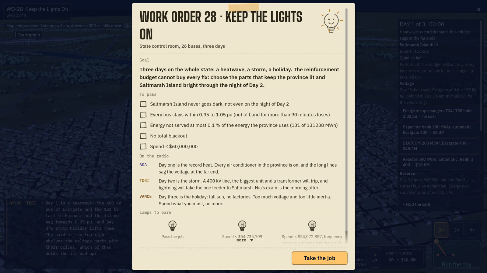
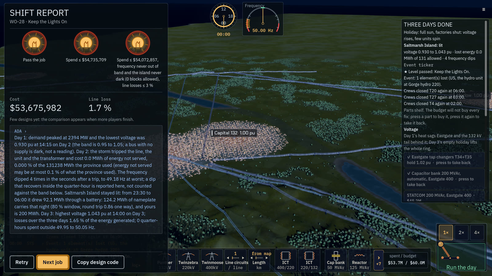

Wiki / How a job goes
How a job goes
Every job is the same four steps. The shots below are the finale, which draws in the new look.
- Read the work order. It opens when you take a job: the place, three people on the radio, the goal in plain words, the pass conditions with their numbers and the three lamps you can earn. The pin on the screen opens it again.

- Build. Pick parts from the tray and put them on the map. Each part has a price, and the budget tag keeps the running total. A job over its budget is lost.

- Run the day. The lever runs the 24-hour clock in 15-minute blocks, at 1x, 2x or 4x. Voltage, loading and frequency move on the dials and the map. In the new look the windows of a town light by the voltage it gets, and go dark when it loses supply.

- Read the report. It explains what happened in your own numbers and what to try next. A won job shows the lamps you earned. A lost day names the first thing that failed, and Retry starts the job again with your design kept.

The three lamps
Passing the job lights the first lamp. The second and third ask for less spend, and the third often adds a condition of its own. The lamps are on the work order, with their numbers, before you build.
Modes
- Learner: the coach steps and their reasons show as you go.
- Engineer: per-unit values and stricter limits.
- Sandbox: just the grid.
Cute is a switch in the settings. It adds faces to the drawings; the drawings still follow the numbers.
Order of jobs
A job opens when you have passed the one before it. "See the finale" on the job board opens the finale at any time. The jobs board marks every job that still draws in the classic look with a "Classic" chip.